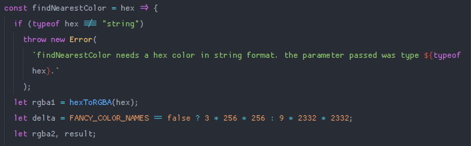

(almost) everything I've learned about color science in javascript.
In the past month, I've learned more about color science and color math than I have in my entire life. that's because I recently created an application whose entire purpose is color. for this, I needed to know several things — how rgb color space works, how to use srgb, how hex colors work, how hsl colors work, how to find the contrast ratio between colors and how that works on the web.
I learned all that among many other things — including application of bitwise operations in javascript, which I never have any reason to use otherwise. here are the most important techniques that I learned.
first technique: hex to rgba and back.
Converting from a hex value to an rgba color is pretty straightforward, as you'll see. however, I like to be thorough — the function I've written will accept hex values in almost any common format - three, four, six, and eight characters. the first thing that needs to be done, upon recieving a hex string, is validating it:
if the value passed in is not a string, doesn't exist, or is too short, the function immediately stops. if the function is passed a hex color that begins with a # symbol like #f4ffc3, that
symbol is removed and the function continues with just the numbers and letters. finally, a regular expression is used to make sure the value only contains a specific range of characters. I'll describe why these specific characters are used
in a second.
after validation, the function figures out how long the string is and then performs the conversion. I'll focus on the common six-character string case, for the sake of brevity.
a hex color, like #50c878, is a number in hexadecimal — a base sixteen numeral system made with sixteen symbols as opposed to our traditional ten (numbers zero through nine). base sixteen consists of those symbols plus the letters a through f. a would come after nine, and be equal to ten, therefore f is equal to fifteen. knowing this, you can see more clearly how the color is structured. # is just to specify to the computer that what follows that symbol is a hex color. after that, every pair of numbers is a single value ranging from zero to two hundred fifty-five — the minimum and maximum values for individual colors in srgb (standard red green blue) space.
so where does this function begin? well, to start, it gets a raw integer from the hex value. let's work with my example color of 50c878 (remember, the number sign is removed). I'll use javascript's parseInt("50c878", 16) to convert the base sixteen number to an integer. the output looks like this:
now, we're working with a regular integer, which we'll call rgb. this is where bitwise operations are applied to get each part of the final rgb value! red is calculated by shifting rgb to the right by sixteen bits. the value from this operation is used in a bitwise and with the hex literal 0xff (255). let's see what this step looks like.
we end up with the integer eighty, and the and operation appears to have had no effect. the and operation with the hex literal for 255 (0xff), in this case, will only have an effect with certain numbers, which you'll see here with the second operation — finding the green value.
we continue this process until we have three values calculated and the function returns an object: { r: 80, g: 200, b: 120 }.
so how do we go back? that's much, much simpler. I wrote a helper function to convert a number to it's hex representation:
and then all you have to do is something like:
const rgbToHex = (r, g, b) => `#${hex(r)}${hex(g)}${hex(b)}`;
and that's all there is to it. running the rgb values we just got from hexToRGBA through this function results in...the hex color we started with! no surprise there.
second technique: converting rgb to hsl.
I also needed to know how to convert rgb to hsl, for another part of my color display and certain calculations. the function involved is a little bit complicated and is definitely not my original work. it's a combination of several implementations I've seen written in a few different languages. here's the first part:
the first thing done is dividing all the rgb values by the maximum possible value of each (in order to limit the values to the set of 1), and then finding the maximum and minimum among the resulting numbers. then, we do the heavy lifting:
this second part first makes sure the color isn't just white or black (if (max != min)). then, we find the saturation by dividing the difference of the maximum and minimum in the g, b set by the sum of the same, or, if lightness is about 0.5 as defined in the first part, we divide the difference of the maximum and minimum by two minus the difference of the maximum and minimum.
then, we determine which color has the highest value and use that to calculate the hue. I then multiply the resulting values to convert them to values that would be used in a typical application of hsl values, and make sure that the hue is not negative. the output of this function looks something like this:
third technique: calculating luminance / finding contrast ratio.
Contrast ratio is important for accessibility reasons. it's usually important when deciding on colors to use as the background and text color. the web content accessibility guidelines (wcag) define a range of contrast ratios from one to twenty-one — one meaning the two colors are the same (ergo impossible to read), twenty-one meaning the two colors are the highest contrast possible (very easy to read).
as contrast ratio decreases, text becomes harder and harder to read. so how would we calculate contrast ratio? w3c describes the process mathematically here:
which I translated into javascript like this:
this function was meant to take in hex colors as arguments, so first we convert the hex values to rgb values. then we calculate the luminance of the rgb colors as described here which I converted to this function:
the values of the constants are defined elsewhere, but described at this link. after the luminance calculation, we can determine which color is darker and which one is lighter. then the contrast between the two colors is determined by dividing the sum of the color and 0.05 by the sum of the other color and 0.05. we can use that value to get the contrast number from one to twenty-one by multiplying it by one hundred, rounding it down, and then dividing it by one hundred. I used this function in many places while I was developing emerald.
fourth technique: finding the closest "human-readable" color.
This is a really interesting part. I wanted some way to find out the closest css color name (like mediumseagreen) to any given color. so, I got a dictionary of every css color name mapped to its hex value:
I also did the same thing with a much larger library of colors, so I'd have to option to switch to more detailed color names, which you can use in emerald if you click on 'css color names' — it will switch to 'fancy color names'.
the function that finds the closest color name to any given hex color is probably the single most complicated function in all of emerald, at least for me. first of all, an array is created containing all the hex values from the selected color library: it will either be colorHexArray or fancyColorHexArray depending on the user's choice. the important thing is just to have a dictionary of colors ready to go and a variable outside the scope of the function that will hold the last known closest color as the function searches for a match. get some validation and variable initialization out of the way:
rgba1 is just the initial rgb equivalent of the hex value passed into the function. delta depends on the currently selected color library, which I determine by asking whether a flag variable FANCY_COLOR_NAMES is true or false. delta essentially determines the granularity of the function, meaning it needs to be more granular when working with more colors — so, if the larger color lib is in play, delta is huge. I also initialize rgba2 and result which will be used later. and then it's time for a little color math — a little three dimensional math never hurt anyone.

I'll just focus on the case in which we're using the css color lib, not the fancy one, but the process is essentially the same. the only thing that changes is the array that the forEach loop is iterating over. this part goes through every single color in the array and measures the distance between our original color and the current color, which I assign to rgba2. when the distance is small enough, result becomes the closest acceptable color to our input.
then, the actual closest color name is selected based on the final hex value we assigned to result, which is the last known closest color if there was no result (this only happens in very limited situations, but it's just to prevent undefined from ever showing up as the closest color). the color is located in the cssColorNames array, which is either the css color lib or the fancy one, and the name of that color is returned. this is what the output of the function findNearestColor looks like when you're sliding the color slider around:
fifth technique: changing the shade of a hex color.
I decided at some point to add a feature to emerald that would allow you to see alternative shades of the current color pair, from light to dark. it currently looks like this:
this function involves more bitwise operations. what it does is get the integer from a base sixteen hex number, like we did before when converting from hex to rgb. then it adds whatever amount we pass in to each of the r, g, and b values (I used fifteen to lighten and negative fifteen to darken). if r, g, or b go below zero as a result of darkening, they become zero — no such thing as negative colors (yet).
initially, I was showing six alternative shades of a color in emerald. however, if the color was too dark, the alternative shades would all be black, because you can't darken black, so if more than one swatch was black, I started taking the first swatch and tacking on a lighter version to the top of the stack, chopping off the unnecessary black swatches. you can see that behavior here (notice how the bottom swatches stop darkening and only the top swatches change after a bit):
sixth technique: determining the brightness of a color.
Finally, I wanted to implement a way to change certain text to be white or black if the background it was in front of became too dark or light. w3c's description of how to find a color's brightness is useful here. the algorithm described in that link is taken from an algorithm made for converting from rgb to yiq color — that algorithm is here. I converted the w3c's interpretation of the algorithm to this javscript:
also in this screenshot: you can see where I determine whether to make certain text black depending on the brightness of the background.
that's pretty much everything I've learned so far. I'm working on writing a utility that will take two colors and find the nearest two colors with x contrast ratio, which is proving to be incredibly hard for me
since I'm not too great at math. thank you for reading, and if you're writing an application that needs to programmatically handle color, then I hope this was useful to you, even if we speak different (programming) languages.
currently listening to:
- ares by yvette young of covet
- tout petit moineau by igorrr
- 人間なんか大嫌い+ / I
just hate people+ by pinocchiop
- exavid by an
- ウテナ / utena by reol
- deja
vu by dreamcatcher